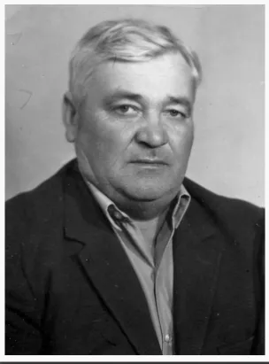

Дмитровка Бердянская
Ланской Иван Ефремович

Ланской Иван Ефремович
(11.06.1923 г. - 11.11.1992 г.), участник Великой Отечественной войны, ветеран колхоза им. Ленина. Освобождал от врага Украину, Беларусь, Польшу. Войну окончил на территории фашистской Германии.
Награжден орденами Отечественной войны, Красной Звезды, медалями «За отвагу», «За боевые заслуги», «За Победу над Германией в Великой Отечественной войне 1941-1945 годов», «За доблестный труд. В ознаменование 100-летия со дня рождения В.И. Ленина», «Ветеран труда» и другими.
Родился в с. Дмитровка Бердянского района.
С июля 1941 года – в действующей армии. В составе Северо-Кавказского фронта защищал подступы к Кавказу и бакинской нефти. Был дважды ранен.
В послевоенные годы восстанавливал разрушенное хозяйство колхоза. Работал в полеводческой бригаде на разных работах.
Со средины 1960-х годов работал в строительной бригаде каменщиком и мостовщиком-строителем дорог с твердым покрытием в с. Дмитровка и пос. Шевченко. Был заботливым наставником молодежи.
Охонько Илья Семенович
 Охонько Илья Семенович
(20.08.1924 г. - 24.08.1986 г.), участник Великой Отечественной войны, отличник образования Украины, депутат районного совета нескольких созывов.
Награжден орденом Отечественной войны, медалями «За боевые заслуги», «За отвагу», «За Победу над Германией», «За доблестный труд...» и другими.
Родился на Одесщине. В начале 1950-х по распределению приехал в с. Дмитровка Бердянского района. Работал учителем начальных классов, учителем биологии.
В 1960 году был назначен директором Дмитровской средней школы. В этой должности проработал более двадцати лет.
Илья Семенович как директор и как депутат многое сделал для улучшения условий учебы учащихся.
Были открыты новые учебные классы. В 1976 году открыто новое двухэтажное здание средней школы со всеми удобствами. Рядом со школой построено современное жилье для семей учителей.
Илья Семенович Охонько многое сделал не только для современников, но и для будущих поколений своей второй Родины – с. Дмитровка.
Портрет солдата Победы навечно занесен на Галерею боевой славы «Они сражались за Родину», открытую к 30-летию Победы в Великой Отечественной войне в Доме культуры с. Дмитровка.
Охонько Илья Семенович
(20.08.1924 г. - 24.08.1986 г.), участник Великой Отечественной войны, отличник образования Украины, депутат районного совета нескольких созывов.
Награжден орденом Отечественной войны, медалями «За боевые заслуги», «За отвагу», «За Победу над Германией», «За доблестный труд...» и другими.
Родился на Одесщине. В начале 1950-х по распределению приехал в с. Дмитровка Бердянского района. Работал учителем начальных классов, учителем биологии.
В 1960 году был назначен директором Дмитровской средней школы. В этой должности проработал более двадцати лет.
Илья Семенович как директор и как депутат многое сделал для улучшения условий учебы учащихся.
Были открыты новые учебные классы. В 1976 году открыто новое двухэтажное здание средней школы со всеми удобствами. Рядом со школой построено современное жилье для семей учителей.
Илья Семенович Охонько многое сделал не только для современников, но и для будущих поколений своей второй Родины – с. Дмитровка.
Портрет солдата Победы навечно занесен на Галерею боевой славы «Они сражались за Родину», открытую к 30-летию Победы в Великой Отечественной войне в Доме культуры с. Дмитровка.
Ланская Анна Васильевна
 Ланская Анна Васильевна (родилась 5 июля 1917 года - умерла 8 апреля 1971 года).
Родилась в г. Новогеоргиевске Кировоградской области. Родители умерли, когда ей был 1 годик. Воспитывалась в детдоме, в Харькове. Закончила школу рабочей молодежи, Харьковский фармацевтический институт по специальности "провизор" в 1939г. До 1948 года работала в госпитале в Самарканде. Потом получила направление в Дмитровку, где 22 года проработала заведующей аптекой № 62.
Ланская Анна Васильевна (родилась 5 июля 1917 года - умерла 8 апреля 1971 года).
Родилась в г. Новогеоргиевске Кировоградской области. Родители умерли, когда ей был 1 годик. Воспитывалась в детдоме, в Харькове. Закончила школу рабочей молодежи, Харьковский фармацевтический институт по специальности "провизор" в 1939г. До 1948 года работала в госпитале в Самарканде. Потом получила направление в Дмитровку, где 22 года проработала заведующей аптекой № 62.
>